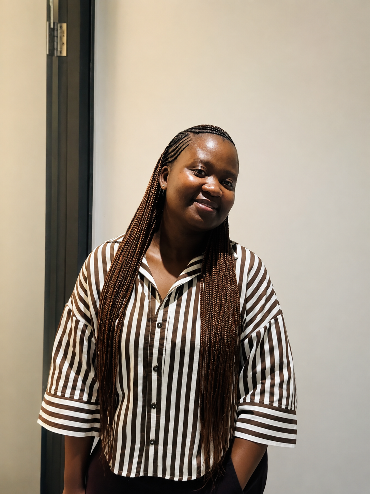

About Me 👩

Who Am I?
My name is Zandile Kama. I am currently studying towards an Advanced Diploma in ICT in Application Development at Walter Sisulu University. I was born and raised in a small town called uMqanduli in the Eastern Cape, South Africa.
I completed my secondary education at Manzelwandle Sandile Senior Secondary School. After successfully passing my matric in 2018, I enrolled at Walter Sisulu University in 2019 to study Information Technology. Through dedication and hard work, I successfully completed my qualification and graduated in 2022.
My Education and Experience
My studies provided me with a strong foundation in programming, software development, database management, networking, and information technology. During my academic journey, I gained both theoretical knowledge and practical skills that prepared me for the workplace.
After graduating, I obtained my first internship at PAICTA, where I worked as a Software Developer Intern. This opportunity allowed me to enhance my programming skills and gain valuable experience in software development projects.
I later joined Madwaleni (or your hospital name) Hospital as an HMS2 (Health Management System) Intern. My responsibilities included System Administration, Desktop Support, HMS Facilitation, IT Technical Support, user account setup and support, as well as hardware and software maintenance. This role helped me develop strong problem-solving, communication, and technical support skills.
My Career Goals
My goal is to continue learning, improving my technical skills, and building a successful career in technology. I am passionate about software development, system administration, and IT support, and I aspire to contribute to innovative technology solutions that make a positive impact.